About me
What is ElasticSearch?
Why ElasticSearch?
Installing and configuring
How the cluster works
Indexing and retrieving documents
Search features
What next?
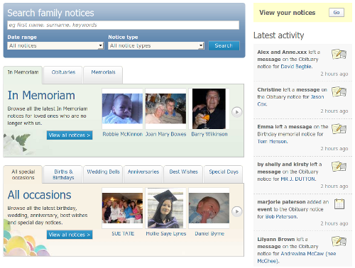
Clinton Gormley (DrTech)
Author of ElasticSearch.pm
CTO of iAnnounce
Family announcements platform for newspapers
Lots of full text search
MySQL couldn't keep up
Full text search engine
Lucene based / Written in Java
Open source
Written by Shay Bannon (kimchy) - author of Compass
Thin interface to talk to ElasticSearch
Connects to an ElasticSearch cluster
Downloads active list of nodes
Randomly selects one node
Reconnects automatically if dropped, or forked
Pain free installation/configuration
High availability
Scalability - one node to hundreds
Fits your domain model
Power and flexibility of Lucene
JSON with REST over HTTP - easy to debug
Cloud ready
Install ElasticSearch
wget http://cloud.github.com/downloads/elasticsearch/elasticsearch/elasticsearch-0.9.0.zip
unzip elasticsearch-0.9.0.zip
Install the service wrapper (optional)
wget http://github.com/elasticsearch/elasticsearch-servicewrapper/zipball/master
unzip *servicewraper*.zip
mv *servicewrapper*/service elasticsearch-0.9.0/bin/
Install ElasticSearch.pm
cpanm ElasticSearch
./config/elasticsearch.yml
cluster:
name: MyCluster
network:
host: 127.0.0.1
gateway:
type: fs
fs:
location: /opt/es_data/ # shared dir, eg NFS Start node in the background:
./bin/elasticsearch
Start node in the foreground:
./bin/elasticsearch -f
Use the service wrapper:
./bin/service/elasticsearch start | stop | restart
curl -XGET 'http://127.0.0.1:9200/_cluster/state?pretty=true'
{
"cluster_name" : "MyCluster",
"master_node" : "57a8fcd6-3867-465f-a960-b748fc61ff76",
"blocks" : { },
"nodes" : {
"57a8fcd6-3867-465f-a960-b748fc61ff76" : {
"name" : "Vindaloo",
"transport_address" : "inet[/127.0.0.1:9300]"
}
},
"metadata" : { "indices" : { } },
"routing_table" : { "indices" : { } },
"routing_nodes" : { "unassigned" : [ ], "nodes" : { } }
}
use ElasticSearch();
my $c = ElasticSearch->new( servers => '127.0.0.1:9200' );
my $c = ElasticSearch->new(
servers => [ '192.168.0.10:9200', '192.168.0.11:9200' ],
);
$c->trace_calls(1); # STDERR, or $c->trace_calls('es.log')
$c->cluster_state
curl -XGET 'http://127.0.0.1:9200/_cluster/state'
# {
# "routing_nodes" : {
# "unassigned" : [],
# "nodes" : {}
# },
# "routing_table" : {
# "indices" : {}
# },
# "blocks" : {},
# "metadata" : {
# "indices" : {}
# },
# "nodes" : {
# "57a8fcd6-3867-465f-a960-b748fc61ff76" : {
# "transport_address" : "inet[/127.0.0.1:9300]",
# "name" : "Vindaloo"
# }
# },
# "master_node" : "57a8fcd6-3867-465f-a960-b748fc61ff76",
# "cluster_name" : "MyCluster"
# }
$c->create_index(index=>'yapc')
curl -XPUT 'http://127.0.0.1:9200/yapc/'
# {
# "ok" : true,
# "acknowledged" : true
# }
$c->create_index(
index => 'yapc',
defn => {
number_of_shards => 3,
number_of_replicas => 1
}
);
curl -XPUT 'http://127.0.0.1:9200/talks/' -d '
{
"index" : {
"number_of_replicas" : 1,
"number_of_shards" : 3
}
}
'
# {
# "ok" : true,
# "acknowledged" : true
# }
Node ⇒ Instance of ElasticSearch
Master node / Data node / Non-data nodes
Index ∼ Namespace / Database
Each index can have its own settings
Data assigned to a Shards
Each shard is a Lucene instance
Primary shard / Replica shard
A shard is assigned to a node, relocatable
auto-discovery - multicast or unicast
no fixed master - master elected
auto-balanced
load balanced
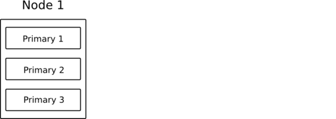 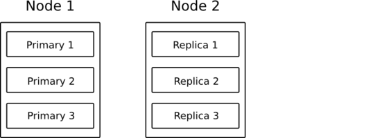 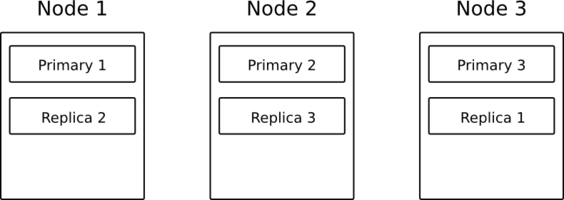
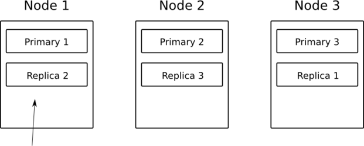 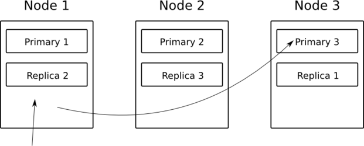 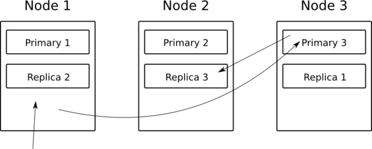
Index a document which is hashed to Shard 3
Map/Reduce or Scatter/Gather
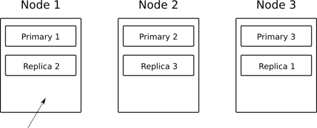 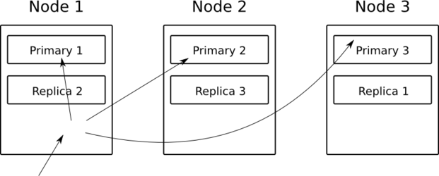 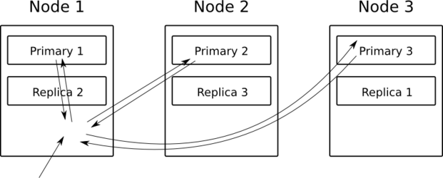 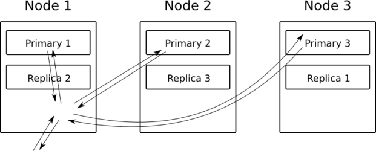
more primary shards
more data
more scalability
more replicas
higher availability
faster searches
more scalablility
Each document has:
Index
Type
ID (if not present, auto-generated)
Data
$c->index(
index => 'yapc', type => 'talk', id => 1,
data => {
title => 'ElasticSearch, you know, for search',
subject => 'A discussion of blah blah blah...',
date => '2010-08-06',
duration => 20,
votes => 10,
tags => ['perl','lucene','magic'],
speaker => {
name => 'Clinton Gormley',
email => 'clint@traveljury.com',
}
}
);
# {
# "ok" : true,
# "_index" : "yapc",
# "_id" : "1",
# "_type" : "talk"
# }
No need to commit
Transparently distributed to replicas
Near real time (1 second)
$c->get(
index => 'yapc',
type => 'talk',
id => 1
);
curl -XGET 'http://127.0.0.1:9200/yapc/talk/1'
# {
# "_source" : {
# "subject" : "A discussion of blah blah blah...",
# "date" : "2010-08-06",
# "speaker" : {
# "email" : "clint@traveljury.com",
# "name" : "Clinton Gormley"
# },
# "title" : "ElasticSearch, you know, for search",
# "duration" : 20,
# "votes" : 10,
# "tags" : [
# "perl",
# "lucene",
# "magic"
# ]
# },
# "_index" : "yapc",
# "_id" : "1",
# "_type" : "talk"
# }
$c->search(
index => 'yapc',
type => 'talk',
query => {
field => { _all => 'magic' }
}
);
curl -XGET 'http://127.0.0.1:9200/yapc/talk/_search' -d '
{
"query" : {
"field" : {
"_all" : "magic"
}
}
}
'
# {
# "hits" : {
# "hits" : [
# {
# "_source" : {
# "subject" : "A discussion of blah blah blah...",
# "date" : "2010-08-06",
# "speaker" : {
# "email" : "clint@traveljury.com",
# "name" : "Clinton Gormley"
# },
# "title" : "ElasticSearch, you know, for search",
# "duration" : 20,
# "votes" : 10,
# "tags" : [
# "perl",
# "lucene",
# "magic"
# ]
# },
# "_score" : 0.09196241,
# "_index" : "yapc",
# "_id" : "1",
# "_type" : "talk"
# }
# ],
# "max_score" : 0.09196241,
# "total" : 1
# },
# "_shards" : {
# "failed" : 0,
# "successful" : 5,
# "total" : 5
# }
# }
$c->search(
index => 'yapc',
type => 'talk',
query => {
field => { _all => 'magic' }
}
);
Search across one, many or all types
Search across one, many or all indices
All text is analysed
Lower cased
Split on punctuation
Stopwords removed
Result ⇒ Terms
"The Quick Brown fox jumped over the lazy dog's bowl!"
⇒ 'quick', 'brown', 'fox', 'jumped', 'over', 'lazy', 'dog', 'bowl'
Customisable, but use same analyser at:
index time
search time
ElasticSearch tries:
First, to make it easy
Then, make it powerful
Tries to guess each field type:
{
"description": "foobar", # string
"count": 123, # integer
"price": 123.45, # float
"date" "2010-01-01", # date
}
BUT:
{
"description": 123, # integer
"count": "123", # string
}
Also:
{ "tags": ["magic"] } # Term 'magic'
{ "tags": ["black-magic"] } # Terms 'black','magic'
Mapping gives us control:
What data type is a field?
How is it analysed?
IS it analysed?
Should it be stored?
Should its value be “boosted”?
Should it be searchable through '_all'?
Should its value be “highlightable”?
Match all documents
$c->search(
index => 'yapc',
type => 'talk',
from => 0,
size => 10,
sort => ['date', { votes => 'desc' } ],
query => { match_all => {} }
);
Term:
{ term => { tags => 'magic' } }
Prefix:
{ prefix => { tags => 'mag' } }
Wildcard:
{ wildcard => { tags => 'm*g?c' } }
Ranges:
{ range => {
votes => {
'gt' => 10,
'lte' => 20,
}
}
{ range => {
speaker.name => {
'gte' => 'abigail',
'lte' => 'larry',
}
}
Field:
{ field => { title => 'know search' } }
Query String:
{ query_string => { query => 'search discussion' } }
{ query_string => {
query => '(search OR elasticsearch) AND discussion '
. 'AND speaker.name:(clinton OR clint)',
phrase_slop => 5,
fields => ['_all', 'title^5' ],
use_dis_max => 1,
tie_breaker => 0.5
} }
bool - must, should, should_not ∼ and / or / not
dis_max - union of text queries, choose most relevant
filtered
custom_score - dynamically calculated relevance, eg recency
fuzzy
more_like_this
constant_score - wraps any filter to use as a query
span_term / span_first / span_near / span_not / span_or
Used to filter results returned by query
Faster than queries
no need to score
can be cached
Types:
term / terms
script
range
prefix
bool / and / or / not
constant_score
geo distance (master on github)
$c->search( index => 'yapc', type => 'talk',
'query' => {
'filtered' => {
'query' => { 'field' => {'speaker.name' => 'clint*' }},
'filter' => {
'and' => {
'filters' => [
{ 'terms' => {
'tag' => 'magic',
'duration' => [20,50]
}},
{ 'range' => {
'date' => { 'from' => '2010-08-01', 'to' => '2010-08-10' }
}}
]
}
},
}});
Facets provide aggregated data based on the search request.
Terms: eg most popular terms for (eg) auto-complete
Histogram: eg number of posts per week
Statistics: min, max, count, std dev etc
Geo-distance: within 1km, 2kms etc (master on github)
ElasticSearch::Query - SQL::Abstract style queries
ElasticSearch::Transport::
HTTPLite
Memcached
AnyEvent
http://github.com/elasticsearch/elasticsearch-servicewrapper